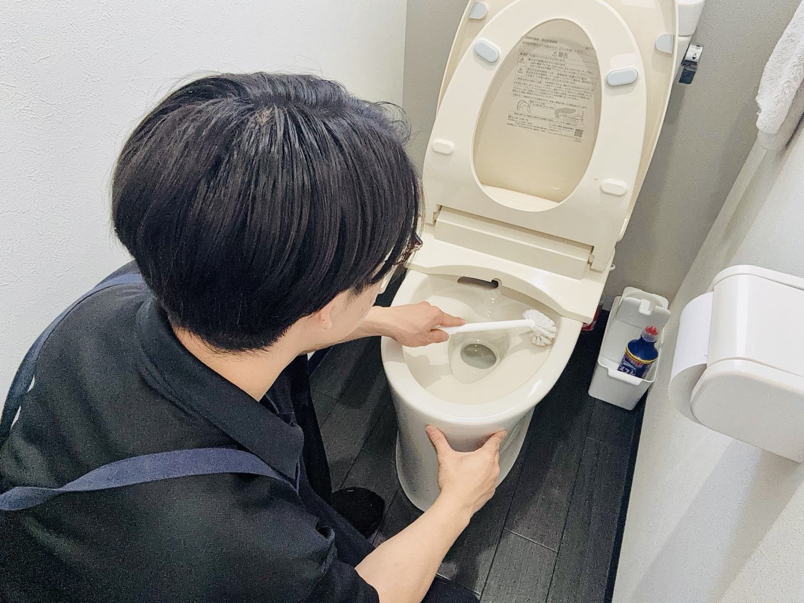

家事代行
月1回から、床・水回り・キッチン・片付け補助などを時間内で優先順位をつけて整えます。
- 共働き・子育て中のご家庭
- 休日を掃除で終わらせたくない方
- 一度きれいにしても維持が難しい方

東大阪市を拠点に、大阪府内を中心に対応
掃除のさとうは、水回り・レンジフード・空室清掃などのハウスクリーニングと、きれいな状態を保つ家事代行を承ります。
営業時間 8:30〜18:00｜時間外は追加料金にてご相談可能です
HOUSEKEEPING
忙しい毎日の掃除を、ただ代わりにするだけでなく、家の状態を見ながら、きれいが続くように整えるお掃除サポートです。
SERVICE
たまった汚れを一度リセットしたい方へ。水回りを中心に、毎日の暮らしが気持ちよくなる清掃を行います。

シンク・コンロまわりを丁寧に。

見えにくい油汚れまで。

水垢・カビ・石けんカスまで。

清潔感のある空間へ。

水まわりを明るく。

入居前・退去後の清掃。
REASON
見える汚れだけでなく、細かな部分まで確認しながら進めます。
ハウスクリーニングの後、きれいな状態を保つ家事代行までご相談いただけます。
家事代行でも、時間配分と気配りを大切に、優先順位をつけて整えます。
東大阪市を拠点に、大阪府内を中心にお伺いしています。
WORK STYLE
サイトを営業資産として育てるため、作業事例・お客様の声・よくある質問を少しずつ追加していきます。


VOICE
これまでご依頼いただいたお客様から、特に多くいただくお声をまとめました。
丁寧な作業細かなところまで確認しながら進めてくれて、安心して任せられました。お客様の声
仕上がり水回りが明るくなり、普段の掃除では落としきれない汚れまできれいになりました。お客様の声
対応の安心感作業前の説明が分かりやすく、料金や内容に不安なくお願いできました。お客様の声
また頼みたい時間内にできる範囲をしっかり整えてくれて、また相談したいと思いました。お客様の声
PRICE
公式サイト受付。 家事代行とハウスクリーニングは、内容・回数・料金の考え方が異なるため、専用ページに分けてご案内しています。
初回お試し、月1回からの定期利用、スポット利用の料金と受付日時を掲載しています。
家事代行の料金を見る水回りセット、単品メニュー、空室クリーニングの料金を掲載しています。
清掃料金を見るFAQ
はい。ご相談だけでも大丈夫です。内容を確認し、無料でお見積りいたします。
お見積り内容をご確認いただいた上で作業いたします。追加作業をご希望の場合は、事前に料金をご案内します。
近隣のコインパーキングを利用する場合があります。駐車場代が必要な場合は事前にご相談いたします。
現金・現地でのクレジットカード決済に対応しています。作業後、現地でお支払いいただけます。
東大阪市を拠点に、大阪府内を中心にお伺いしています。
はい。定期利用は月1回から、スポット利用もご相談いただけます。公式サイトから直接お問い合わせください。
家事代行は日常清掃を継続してきれいな状態を保つサービスです。ハウスクリーニングは、専門道具や洗剤でたまった汚れを落とす専門清掃です。
はい。掃除のさとう公式サービスとして、家事代行のご相談を受け付けています。
CANCEL POLICY
お客様に安心してご利用いただくため、下記のキャンセルポリシーを設けております。
日程変更をご希望の場合は、できるだけお早めにご連絡ください。可能な限り柔軟に対応いたします。
PROMISE
必要な作業だけを、分かりやすくご案内します。
自分の家だったらどう掃除するか。その気持ちを大切にしています。
初めての方にも安心してご利用いただけるよう心がけています。
料金や作業内容に不安が残らないよう、事前の確認を大切にしています。
SHOP INFO
初めての方にも安心してご相談いただけるよう、基本情報をまとめました。
「毎週の掃除を頼みたい」「一度しっかりきれいにしたい」など、ご家庭の状況に合わせてご相談いただけます。